现在很多网站和app都采用扁平化设计，使用Icon Font来表现图标非常方便，因为字体文件小、矢量化，所以在开发中很方便，并且不存在失真的情况，所以带来的视觉体验也是很不错的，但是它没有办法做一些变形动效。闲话不多说，说说这两天工作中遇到的一个坑，也总结了一下填坑的方法，在文章的后面我会给大家一个教程讲解一下。
因项目中需要拓展一个功能，功能的入口拓展在导航上，为了与之前的设计一致，所以需要为这个入口添加一个图标。导航的图标部分就是使用的IconFont，但是想不到在拓展图标文件的时候遇到了一些问题。
我把这个新图标的需求和设计师沟通后拿到了新的字体文件(.ttf)，但是不能直接使用，因为很多浏览器并不支持TrueType格式，所以我需要把它转换为不同格式的字体文件之后才能使用。我们可以使用Fontsquirrel这个网站将.ttf类型的字体转换成我们网页中可以使用的格式。
浏览器对字体格式的支持情况：
TrueType格式(.ttf)
Windows和Mac上常见的字体格式，是一种原始格式，因此它并没有为网页进行优化处理。
浏览器支持：IE9+,FireFox3.5+,Chrome4.0+,Safari3+,Opera10+,IOS Mobile Safari4.2+
OpenType格式(.otf)
以TrueType为基础，也是一种原始格式，但提供更多的功能。
浏览器支持：FireFox3.5+,Chrome4.0+,Safari3.1+,Opera10.0+,IOS Mobile Safari4.2+
Web Open Font格式(.woff)
针对网页进行特殊优化，因此是Web字体中最佳格式，它是一个开放的TrueType/OpenType的压缩版，同时支持元数据包的分离。
浏览器支持：IE9+, FireFox3.5+, Chrome6+, Safari3.6+,Opera11.1+
Embedded Open Type格式(.eot)
IE专用字体格式，可以从TrueType格式创建此格式字体。
浏览器支持：IE4+
在我满心欢喜的把新文件替换到项目中之后问题出现了：新图标并没有想我所期望的那样显示在页面上，它的位置上空白一片。一开始我以为把旧版本的字体传到了网站,检查后发现确实是新版本的文件,那么问题可能出现在导出的文件中。结果大吃一惊：导出的文件中新图标不见了!
最终在查看导出的文件时发现我们新增的图标没有出现在文件中。
先看一下我们制作的ttf文件(对截图做了一些处理,只留下了一些常见图标,部分图标无法公开)：
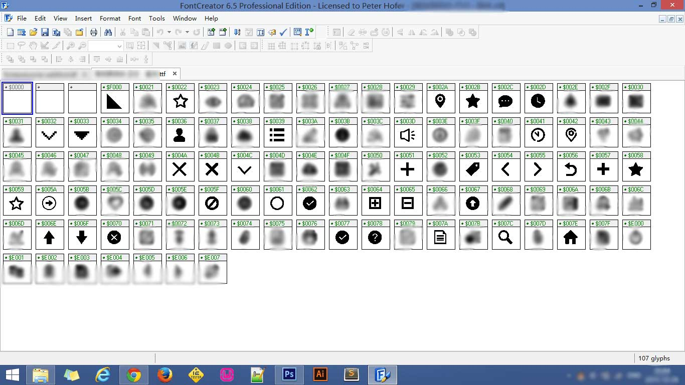
然后查看一下这些图标所占用的字符：
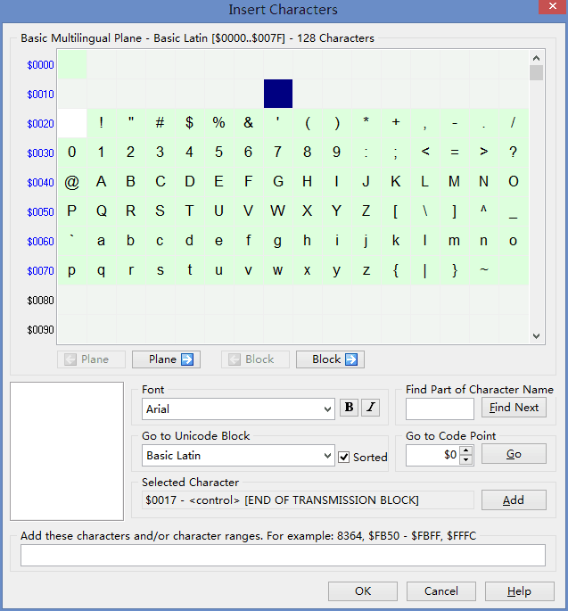
图中标注黄绿色的背景就是我们已使用的字符，我们发现有两个黄绿色的格子里没有字符，对比后发现被过滤掉的就是这些空白位置的字符。（这里面的数量没有上图那么多，因为有一些图标占用的Unicode编码没在这个范围内，其它位置的图标其实也被过滤了一部分，但是在项目中并没有用到，所以这个问题到现在才发现。）
问题找到了，是这个网站导出的问题，所以我把没有处理过的字体文件替换到项目中，到Chrom中测试，依然无法正常显示，原来网站过滤这些地方是有原因的，错误可能是出现在新图标的Unicode编码上面。
“下面会涉及到一些专业知识，对这些不感兴趣的同学可以点击这里跳过。”
学过计算机的朋友可能都清楚，计算机内常见的字符集有：ASCII、GB2312、BIG5、 GB18030、Unicode等，关于字符集更多的信息点击这里：百度百科，Wikipedia。
先从网页上的字符集着手，HTML支持的字符集有很多种，具体支持那些字符集可以查看这里现在绝大多数网页使用的字符集都是Unicode(utf-8)，那么我们来看一下Unicode的编码表是如何规定的：Unicode(百度)，Unicode(Wiki)，我们发现计算机中字符的表示并不是连续的，从已使用的字符那张图中我们就可以发现了，既然不是连续的，为什么新制作的字体是乱码？我们来分析下问题出在了哪里：我添加的新图标在“已使用的字符”的图中7F的位置:
我们先换算成10进制：7*16^1+15*16^0=127
也就是第128个字符(编码是从0开始)。Unicode中第128位是什么？Unicode中最前面的256个Unicode字符集字符对应于256个ISO-8859-1字符，那我们就去查一下这个ISO-8859-1这个字符集，用HTML来表示就是（从第0位开始）我们发现它表示的是 DEL 意义是delete，代表着删除。也就是说这个位置的字符是一个控制字符，代表着特定的功能，它不是表示一个可以显示在网页上的字符，所以那些空白位置上的图标无法正常显示也是理所当然的啦。
所有的Unicode编码表可以点击这里查询，上面的例子用这个查看比较直观。
原来胡乱的拓展图标文件很不明智，所以我们要先找到那些可以显示在页面上的字符，然后替换掉它们(从图上看我们替换了很多常见的字符)，但是图标一旦多起来制作和维护都很麻烦，有没有一种让我们肆无忌惮的拓展图标的方法呢？答案是有的。
Unicode在规定的时候中也考虑了这个问题，它设计了一个“自行使用区域(Private Use Zone)” ，设计它的目的就是留给人们自行使用的(可以用来造字)，分布位置为：E000-F8FF，可容纳6400个字符，在这个区域里，我们就可以随心所欲的创作了，下面开始制作我们喜欢的图标吧！
下面是干货啦，如何制作我们自己的Icon Font：
这里是教程
这里使用的是FontCreator6.5来制作我们的字体，首先我们新建一个空的字体文件File > New：
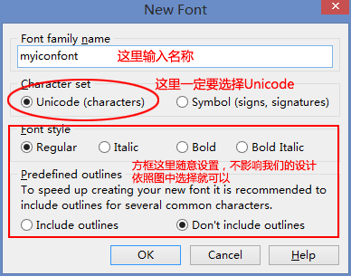这样我们的文件就新建成功了，注意图中红框的部分不要删除，如果删除了字体无法正常使用，切记切记！！！
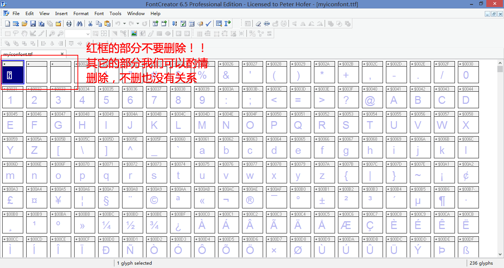我们用AI画一个播放(play)的三角形（其实是不会用T-T），并将整个图形选中Ctrl+C：
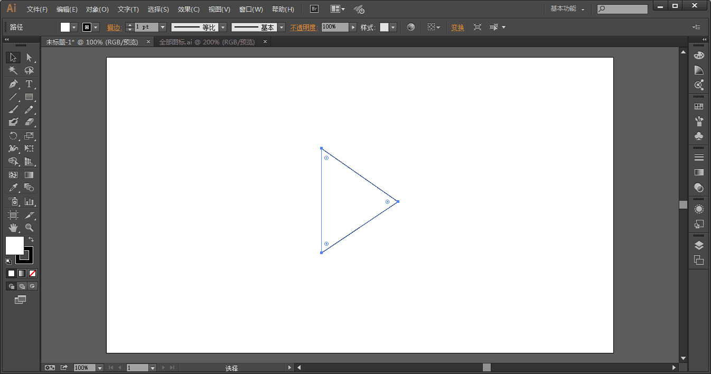选择Insert > Glyphs 按照图中所示，我们在文档的最后插入一个符号：
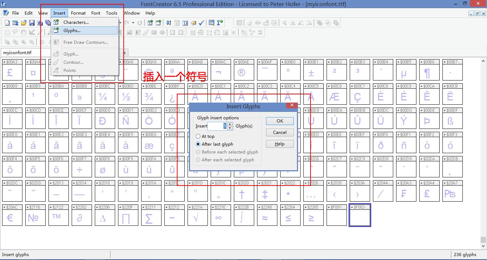插入成功后在文件的最后面会新增一个方格，我们双击它Ctrl+C，调整好位置:
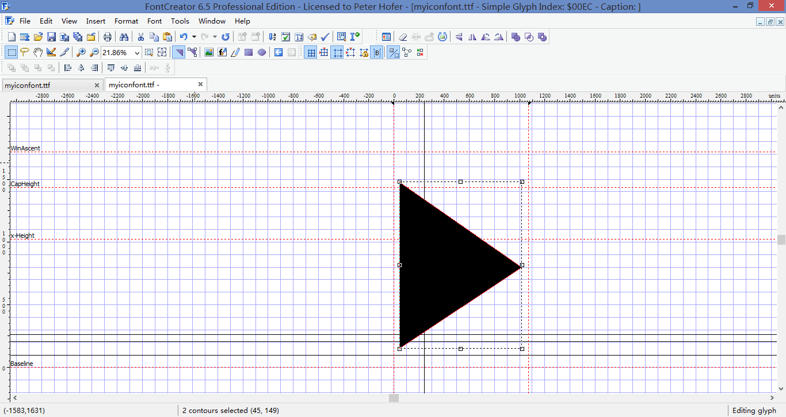
6.添加好图标后我们编辑一下这个图标的属性，右击选择“Properties”
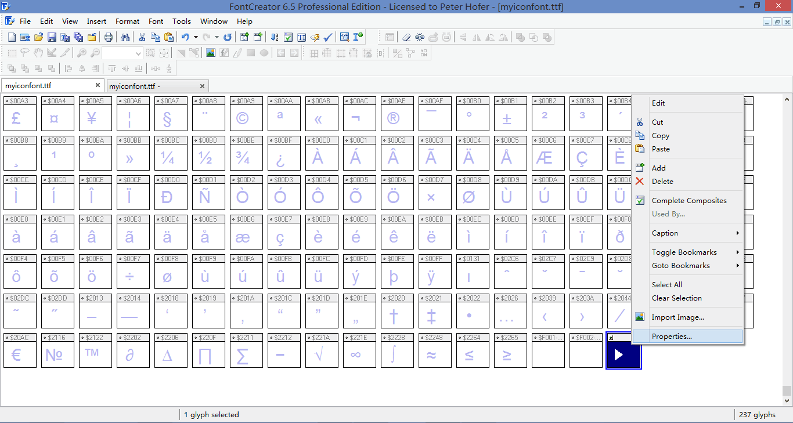
7.关键的一步来了，在这里我们要设置这个图标的Unicode值和在Windows中的映射。之前讲到Unicode设计了自行使用的区块(E000-F8FF)供我们使用，在这个范围内我们取一个值：F000。
将Unicode的值设置为F000后点击ADD按钮。注意红框中的配置。
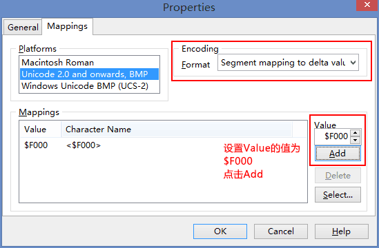
同样将Windows中Unicode的值也为F000。
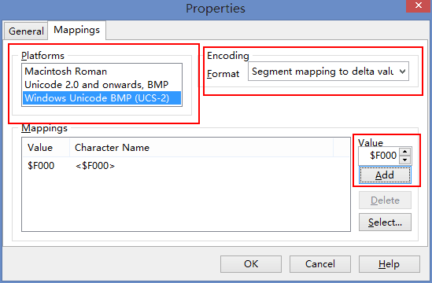
8.在左上角选择File>Save as将我们的字体保存为ttf文件，并上传到Fontsquirrel转换为我们网页所需要的格式。
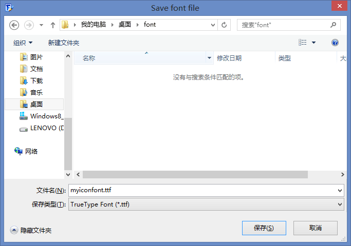
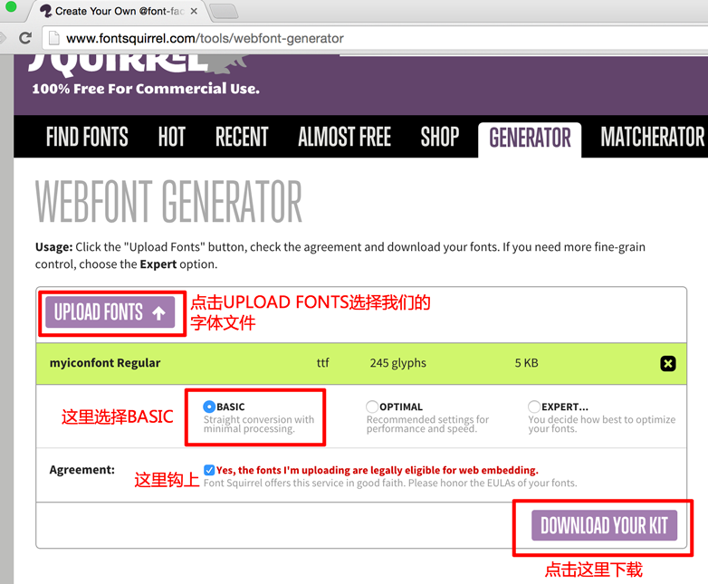
下载后我们就可以把图标应用在网页上了。我们来测试一下:
首先我们先使用@font-face声明一下我们的图标1
2
3
4
5
6
7
8
9
10
11
12
13
14
15
16
17
18
19
20/* iconfont.css */
@charset: 'utf-8';
@font-face {
font-family: 'myicon';
/* path为字体文件的路径 */
src: url('./path/myiconfont.eot');
src: url('./path/myiconfont.eot?#iefix') format('embedded-opentype'),
url('./path/myiconfont.woff2') format('woff2'),
url('./path/myiconfont.woff') format('woff'),
url('./path/myiconfont.ttf') format('truetype'),
url('./path/myiconfont.svg#myicon') format('svg');
font-weight: normal;
font-style: normal;
}
/* 使用iconfont来表示我们的图标 */
.iconfont{
font-family: 'myicon';
font-style: normal;
font-weight: normal;
}
然后是font.html1
2
3
4
5
6
7
8
9
10
11
12
13
14
15
16
17
18
19
20
21
22
23<!-- font.html -->
<!DOCTYPE html>
<html>
<head>
<meta charset="utf-8">
<meta http-equiv="X-UA-Compatible" content="IE=edge">
<title></title>
<link rel="stylesheet" href="./iconfont.css">
<style>
*{margin:0; padding:0;}
.list{ height:35px; margin-left: 10px;line-height:35px; color: #ccc;}
.list .iconfont { display: inline-block; margin-right: 8px;color: #333; }
</style>
</head>
<body>
<!-- 字体测试 -->
<div class="list"><i class='iconfont'></i>点击播放</div>
<div class="list"><i class='iconfont'></i>点击播放</div>
<div class="list"><i class='iconfont'></i>点击播放</div>
<div class="list"><i class='iconfont'></i>点击播放</div>
<div class="list"><i class='iconfont'></i>点击播放</div>
</body>
</html>
Chrome下显示的效果：
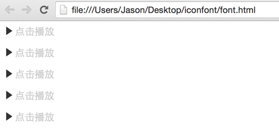
总结
到这里这我们的教程就结束了，在制作IconFont时总结以下几点：
- 我们可以替换可用的字符来制作我们的IconFont.
- 网页的编码格式为utf-8.
- Unicode自行使用区的范围是E000-F8FF，制作的时候记住从E000开始计数，进制为16进制，教程里的工具是FontCreater，版本为6.5.
- 最后文中的写法是兼容ie6的，如果项目中不需要兼容ie678有更好的方案，这种写法藕合度较高，而且不方便阅读(从代码上看无法知道是什么图标)，维护起来很麻烦。
如果文中有什么地方出现错误，或者在制作过程中出现什么问题欢迎在下方留言交流～！
by Jason